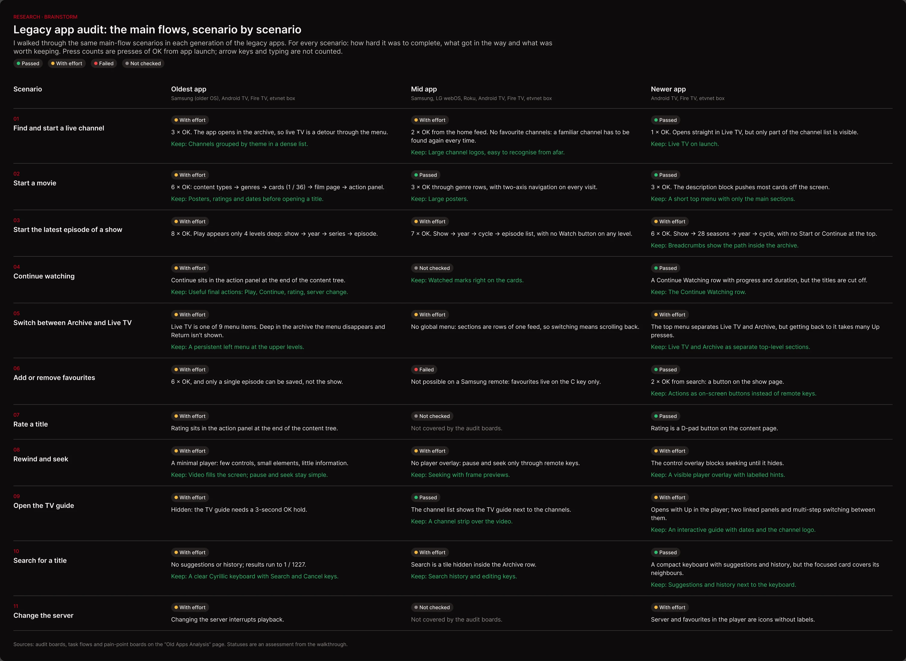
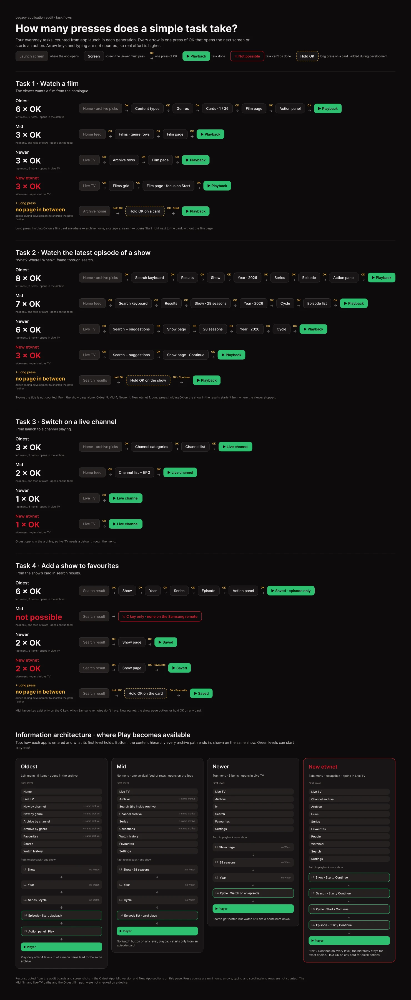
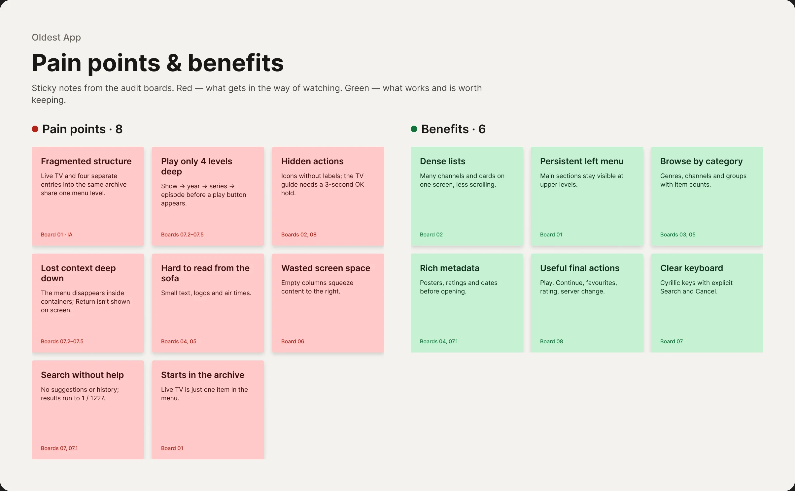
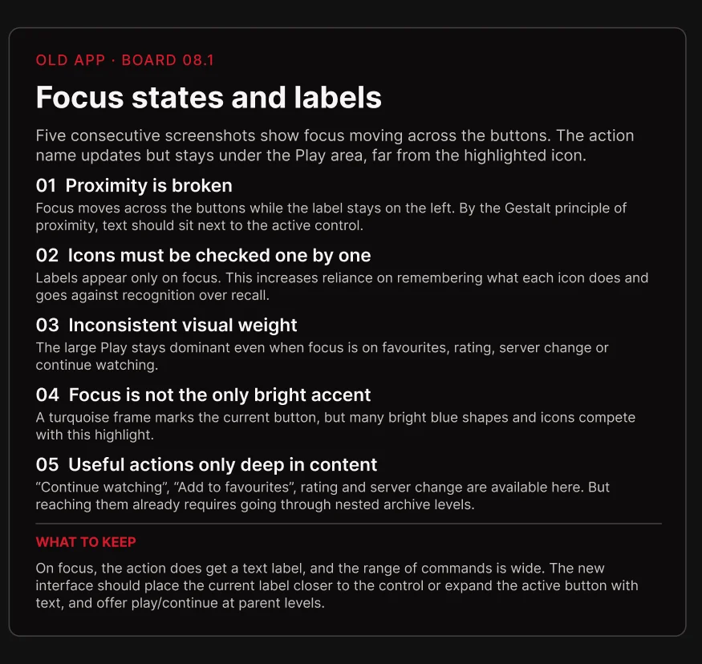
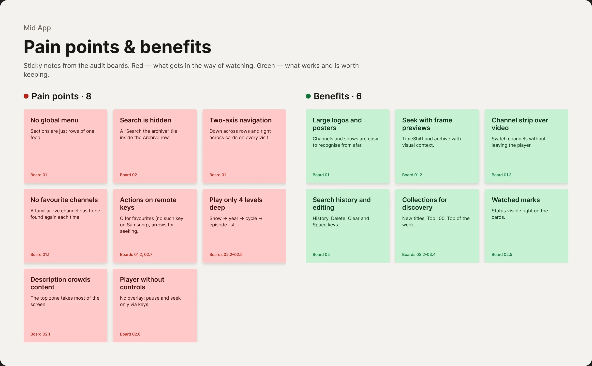

etvnet TV app · Research
Legacy app audit
Before the redesign I audited every generation of the etvnet TV apps that viewers still used. I walked through the same everyday scenarios in each one, documented every screen, mapped the viewer’s journey and collected what got in the way and what was worth keeping. This page holds the full material behind the case study.
Overview
The main flows, scenario by scenario
Eleven scenarios a viewer runs every week, checked in each generation: how hard each was to complete, what got in the way and what to keep. Press counts are presses of OK from app launch.

Overview
How many presses does a simple task take?
Four everyday tasks counted step by step in each generation and in the new app, plus where in the information architecture Play becomes available.

Generation 1
Oldest app
Samsung (older OS), Android TV, Fire TV, etvnet box
Opens in the archive. A persistent left menu with nine items, four of them different entries into the same archive. Play appears only four levels deep.
Pain points and benefits
Sticky notes collected from every board: red is what gets in the way of watching, green is what works and is worth keeping.

User journey map
The same scenario in every generation: find a specific episode of “What? Where? When?” and start it. Each step shows the screen, the action, the viewer’s likely thoughts, pain points, opportunities and an emotion curve. Thoughts and emotions are a hypothesis built from the audit, not interview data.
Screen-by-screen analysis · 16 boards
Each board names five problems on the screen and what to keep from it. Open any image to see it full size.

Generation 2
Mid app
Samsung, LG webOS, Roku, Android TV, Fire TV, etvnet box
No menu: every section is a row in one vertical feed. Big logos and posters, but favourites live on a C key that Samsung remotes don’t have.
Pain points and benefits
Sticky notes collected from every board: red is what gets in the way of watching, green is what works and is worth keeping.

User journey map
The same scenario in every generation: find a specific episode of “What? Where? When?” and start it. Each step shows the screen, the action, the viewer’s likely thoughts, pain points, opportunities and an emotion curve. Thoughts and emotions are a hypothesis built from the audit, not interview data.
Screen-by-screen analysis · 21 boards
Each board names five problems on the screen and what to keep from it. Open any image to see it full size.
Generation 3
Newer app
Android TV, Fire TV, etvnet box
Opens in Live TV with a short top menu. Search finally got suggestions, but the archive is still show → seasons → year → cycle before Watch.
Pain points and benefits
Sticky notes collected from every board: red is what gets in the way of watching, green is what works and is worth keeping.
User journey map
The same scenario in every generation: find a specific episode of “What? Where? When?” and start it. Each step shows the screen, the action, the viewer’s likely thoughts, pain points, opportunities and an emotion curve. Thoughts and emotions are a hypothesis built from the audit, not interview data.
Synthesis
What to carry into the new app
The audit ended as product requirements rather than a list of complaints: keep useful habits, remove the barriers that kept coming back, and don’t carry over decisions that get in the way of watching. Each point is traced back to the boards above.
Core insight
Viewers should get from “I know what I want to watch” to playback faster, without losing the ways of navigating they already know.
Carousels and a deep structure aren’t the problem on their own. The problem starts when they become the only, long route and offer no quick alternative.
Avoid
Don’t carry over
Repeating UX anti-patterns
- Actions bound to special keysThe C key and other non-standard combinations can be shortcuts, but never the only way. Every important action works with the D-pad and OK.Mid 2.2–2.7 · New 3.1
- Hidden player commandsDon’t make viewers remember which arrows open TimeShift, the channel list or the EPG. Show the available actions in the player overlay.Mid 1.2–1.3 · New 1.1–1.2
- Waiting for the interface to closeAn open player panel must not block seeking or other frequent commands.New 1.1
- Nesting as the required pathDon’t make viewers open every season, cycle and episode just to press Watch. Keep the data structure, but shorten the scenario.Oldest 7 · Mid 2 · New 3.1
- Small text, random accents and focusNo competing bright states, labels floating far from their controls, or focused cards covering their neighbours.Oldest 4, 8–8.1 · Mid 3 · New 3
- Endless horizontal rows with no alternativeCarousels suit discovery, but must not be the only way to reach a known channel or episode.Mid 1, 4.1 · New 1–2
Redesign
Rework
What must change in the new version
- Start / Continue Watching at every levelViewers start from the show, season or cycle; the system picks the right first or next episode. Nesting stays for precise choice.Oldest 7.2–7.5 · Mid 2.2–2.6 · New 3.1
- Live TV and favourites navigationLess movement on two axes: easy category switching, list or grid views, and direct access to saved channels.Oldest 2 · Mid 1–1.3 · New 1
- Screen space for contentFewer always-open descriptions. Viewers should see more cards and channels without hurting the typography.Oldest 1, 6 · Mid 1, 3 · New 1–2.1
- Legibility and full titlesCards show full or clearly distinct titles before focus; focus never covers neighbouring results.Oldest 4 · Mid 3.1 · New 2.1, 3
- Orientation and a clear way backThe current section, the path through containers and the way back are obvious; reaching the menu doesn’t depend on hidden keys.Oldest 5.1, 7 · Mid 1 · New 1
- Predictable searchKeep the compact keyboard, history and suggestions, but separate query, history and results visually and never cover neighbouring cards.Oldest 7 · Mid 5 · New 3
- History by day, clear focusGroup watched titles by date. One clear accent for the active element, with labels next to their actions.Oldest 6, 8.1 · Mid 3 · New 2.1
Keep
Keep
Proven, useful patterns
- Categories and collectionsGenres, archive by channel and themed collections help start watching without an exact query. Keep them inside a clear IA.Oldest 2, 3, 5 · Mid 3.3–4.1 · New 2
- Information density without small textKeep the Oldest app’s quick overview of many channels, but make names and icons readable from a distance.Oldest 2, 4 · Mid 1.1 · New 1
- Familiar global navigationClearly separate Live TV and Archive; keep a recognisable menu with an option to keep it expanded.Oldest 1–2 · New 1
- Informative cards and statusesPosters, rating, duration, season/episode, watched marks and progress help decide and must stay distinct.Oldest 8 · Mid 3 · New 2.1
- EPG and live controlsKeep TimeShift with previews, the interactive TV guide, channel favourites, server refresh and Return to Live.Mid 1.2–1.3 · New 1.1–1.2
- Repeat search and getting back to contentSearch history, suggestions, Continue Watching and favourites save repeated actions.Mid 5 · New 2.1, 3
Priorities for the new app
P0 Start watching without extra screens; full D-pad access; clear focus and a way back; a complete player overlay.
P1 A good overview of channels and cards; readable titles; history grouped by day; search without overlaps.
P2 Personalised views, extra discovery scenarios and optional animation, within what the devices can handle.
Method: a visual audit of the three available etvnet generations plus qualitative observations from Customer Support. Priorities are design recommendations, not measured KPIs; tasks and D-pad press counts were to be checked in a pilot before release.